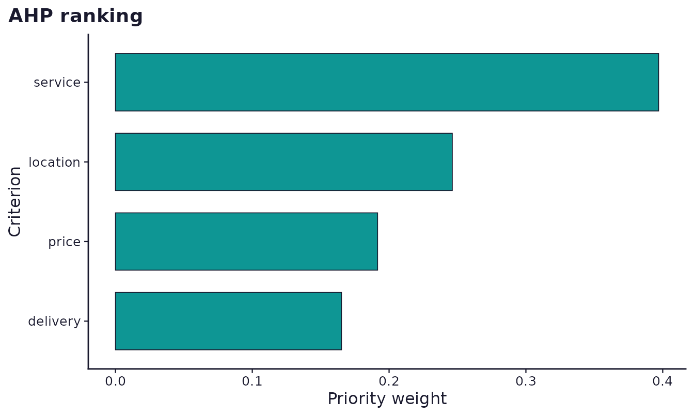
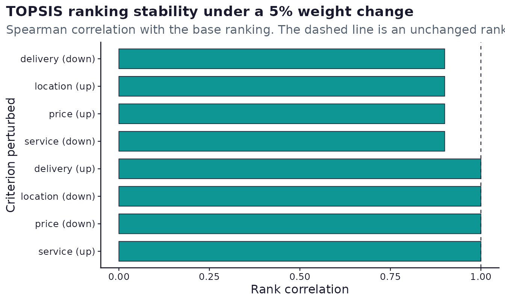
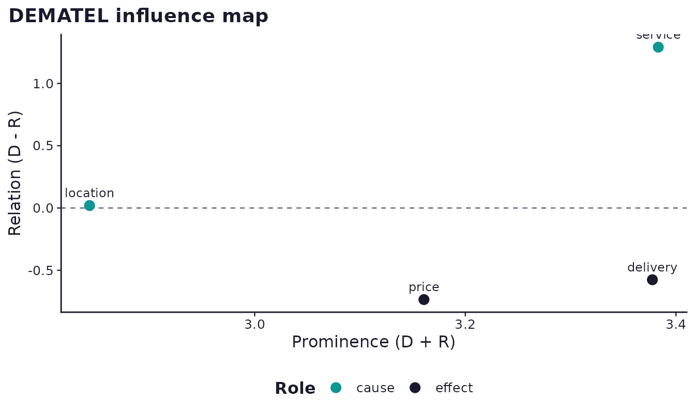

What this vignette covers
Multi-criteria decision analysis ranks a handful of alternatives against several criteria that pull in different directions. surveyframe treats it the same way it treats any other analysis: the method, its inputs, and the roles they play are declared in the instrument before data is collected, and the analysis is the execution of that declaration.
The worked example is a hotel choosing between 5 suppliers on 4 criteria. It ships with the package, so every number below is reproducible.
demo <- read_sframe(system.file("extdata", "hotel_supplier_mcdm.sframe",
package = "surveyframe"))
responses <- utils::read.csv(
system.file("extdata", "hotel_supplier_mcdm_responses.csv",
package = "surveyframe"),
stringsAsFactors = FALSE
)
c(respondents = nrow(responses), criteria = 4, suppliers = 5)
#> respondents criteria suppliers
#> 12 4 5Where the numbers come from
An MCDM result needs two things: a performance matrix saying how each alternative scores on each criterion, and a weight vector saying how much each criterion matters. They can come from different places, and being explicit about which is the difference between a defensible result and a plausible-looking one.
This instrument declares three sources at once, so the example exercises all of them.
| Source | Item | Provides | How |
|---|---|---|---|
| Pairwise comparison | crit_pairs | Criterion weights | Respondents judge each pair on the Saaty 1 to 9 scale |
| Constant sum | crit_points | Criterion weights | Respondents divide 100 points across the criteria |
| Rated matrix | rate_service and 3 more | Performance matrix | Respondents rate every supplier on every criterion |
| Researcher supplied | declared in the plan block | Performance matrix | Audited figures the researcher enters directly |
Each result records which source it used, so a report can say where its numbers came from rather than leaving a reader to assume.
Criterion weights from pairwise judgements
The first block asks what weight each criterion carries. Respondents compared every pair of criteria, and AHP turns those judgements into weights.
results <- run_analysis_plan(responses, demo, plots = has_ggplot)
ahp <- results[["RQ1"]]
kable(ahp$table, row.names = FALSE,
caption = "Criterion weights derived from pairwise judgements.")| Criterion | Weight | Rank |
|---|---|---|
| service | 0.3970 | 1 |
| location | 0.2462 | 2 |
| price | 0.1916 | 3 |
| delivery | 0.1652 | 4 |
Pairwise judgements can contradict each other. If service beats price, and price beats delivery, then service ought to beat delivery by roughly the product of the two. The consistency ratio measures how far the judgements depart from that.
round(ahp$cr, 4)
#> [1] 0.0197Saaty’s convention treats a consistency ratio below 0.10 as
acceptable. This one is well inside it. A ratio above 0.10 does not
invalidate the data, but it should be reported rather than hidden, and
options$cr_filter = TRUE will drop individual respondents
above the threshold before aggregation if a study has pre-declared that
rule.
ahp$plot
Ranking suppliers on audited figures
The second block ranks the suppliers using a performance matrix the researcher supplies, combined with the weights the respondents produced. This is the common hybrid: measured facts about the alternatives, weighted by the people who will live with the decision.
audited <- results[["RQ2"]]
kable(audited$table, row.names = FALSE,
caption = paste("TOPSIS ranking on audited figures, weighted by",
"collected judgements."))| Alternative | Score | Rank |
|---|---|---|
| Equator | 0.6657 | 1 |
| Coral | 0.5530 | 2 |
| Basilica | 0.5478 | 3 |
| Alpha | 0.5180 | 4 |
| Dhoni | 0.4245 | 5 |
c(weights = audited$weights_source, matrix = audited$matrix_source)
#> weights matrix
#> "collected" "supplied"Note the criteria_types this block declares: service and
location are benefit criteria where more is better, while
price and delivery time are cost criteria where less is
better. Getting that wrong silently inverts the ranking, which is why it
is declared in the instrument rather than inferred.
Ranking suppliers on collected ratings
The third block answers a different question with the same method: not which supplier the audited figures favour, but which one the staff rate best. The performance matrix is built from respondents’ ratings, and the weights come from the constant-sum question instead of the pairwise one.
rated <- results[["RQ3"]]
kable(rated$table, row.names = FALSE,
caption = paste("TOPSIS ranking on staff ratings, weighted by the",
"constant-sum question."))| Alternative | Score | Rank |
|---|---|---|
| Equator | 0.6125 | 1 |
| Dhoni | 0.5706 | 2 |
| Basilica | 0.5688 | 3 |
| Alpha | 0.4580 | 4 |
| Coral | 0.4458 | 5 |
The two rankings do not agree, and that is the useful part. Comparing them is a finding rather than a problem to be resolved.
| Supplier | Rank on audited figures | Rank on staff ratings |
|---|---|---|
| Equator | 1 | 1 |
| Coral | 2 | 5 |
| Basilica | 3 | 3 |
| Alpha | 4 | 4 |
| Dhoni | 5 | 2 |
A trap worth naming
All 4 criteria in the rated block are declared benefit,
including price. That is correct here only because the question asked
about value for money, where a higher rating is better.
Had it asked respondents to rate price directly, a higher rating would
mean more expensive and the criterion would be a cost.
Nothing in the data distinguishes those two cases. The wording of the question does, and the declaration has to match it. This is the single easiest way to produce a confident, precise, and completely inverted ranking.
How much do the weights matter?
A ranking produced from collected weights inherits their uncertainty. Before reporting a winner, it is worth asking how much of that result survives a small change in the weights.
sens <- sensitivity_analysis(
x = matrix(c(4.1, 3.0, 210, 36,
3.6, 4.5, 180, 48,
4.8, 2.5, 260, 24,
3.9, 4.0, 150, 72,
4.4, 3.8, 230, 30),
nrow = 5, byrow = TRUE),
weights = audited$weights,
criteria_types = c("benefit", "benefit", "cost", "cost"),
method = "topsis",
alternatives = c("Alpha", "Basilica", "Coral", "Dhoni", "Equator"),
criteria = c("service", "location", "price", "delivery")
)
sens
#> Weight sensitivity: TOPSIS, delta = 5%
#>
#> Base ranking: Equator > Coral > Basilica > Alpha > Dhoni
#>
#> criterion direction weight rho rank_changed top_changed
#> 1 service up 0.4087 1.0 FALSE FALSE
#> 2 service down 0.3848 0.9 TRUE FALSE
#> 3 location up 0.2554 0.9 TRUE FALSE
#> 4 location down 0.2368 1.0 FALSE FALSE
#> 5 price up 0.1992 0.9 TRUE FALSE
#> 6 price down 0.1838 1.0 FALSE FALSE
#> 7 delivery up 0.1721 1.0 FALSE FALSE
#> 8 delivery down 0.1583 0.9 TRUE FALSE
#>
#> Not stable. 4 of 8 perturbations changed the ranking.
#> Report this alongside the ranking rather than the ranking alone.Each criterion’s weight is nudged up and down by 5 percent,
renormalised, and the ranking is recomputed. rho is the
rank correlation with the original ranking, and top_changed
records whether the leading alternative changed.
kable(sens$table, row.names = FALSE,
caption = "Ranking stability under a 5 percent change in each weight.")| criterion | direction | weight | rho | rank_changed | top_changed |
|---|---|---|---|---|---|
| service | up | 0.4087 | 1.0 | FALSE | FALSE |
| service | down | 0.3848 | 0.9 | TRUE | FALSE |
| location | up | 0.2554 | 0.9 | TRUE | FALSE |
| location | down | 0.2368 | 1.0 | FALSE | FALSE |
| price | up | 0.1992 | 0.9 | TRUE | FALSE |
| price | down | 0.1838 | 1.0 | FALSE | FALSE |
| delivery | up | 0.1721 | 1.0 | FALSE | FALSE |
| delivery | down | 0.1583 | 0.9 | TRUE | FALSE |
plot(sens)
This example is worth reading closely, because it is not the clean
case. Four of the 8 perturbations changed the ranking, so
stable is FALSE. But top_changed
is FALSE throughout: the order shuffles among the middle
suppliers while Equator stays first under every nudge.
That distinction is the whole point of running this. “Equator ranks first, and that holds under a 5 percent change in any single weight” is a defensible claim. “The ranking is Equator, Coral, Basilica, Alpha, Dhoni” is not, because positions 2 to 5 move. Reporting the full ranking as though it were as solid as the winner would overstate what the data supports.
A result where top_changed is TRUE anywhere
deserves a stronger caveat still, and one where stable is
TRUE throughout can be reported as robust to the
weights.
Which criteria drive the others
The criteria are not independent. Delivery speed and price move together; service quality may drive both. DEMATEL asks respondents how strongly each factor influences each other factor and separates the causes from the effects.
dematel <- results[["RQ4"]]
kable(dematel$table, row.names = FALSE,
caption = "DEMATEL cause and effect classification.")| Criterion | D | R | Prominence | Relation | Role |
|---|---|---|---|---|---|
| service | 2.3375 | 1.0457 | 3.3833 | 1.2918 | cause |
| delivery | 1.4008 | 1.9769 | 3.3776 | -0.5761 | effect |
| price | 1.2126 | 1.9481 | 3.1607 | -0.7355 | effect |
| location | 1.4315 | 1.4117 | 2.8432 | 0.0198 | cause |
The prominence column measures how involved a criterion is in the system overall, and the relation column separates the drivers from the driven. A criterion with a positive relation value influences others more than it is influenced.
dematel$plot
Note that the influence question uses a different scale from the AHP one. AHP reads reciprocal relative importance on Saaty’s 1 to 9 ratio scale, while DEMATEL reads directed 0 to 4 influence with no reciprocity. They are not interchangeable, and surveyframe refuses to pair one with the other’s method at validation time rather than returning plausible numbers from meaningless input.
Reporting the whole plan
Because every block is declared in the instrument, the whole analysis is one call and the report writes itself in the same order the plan was declared.
| RQ | Research question | Method | Result |
|---|---|---|---|
| RQ1 | What weight does each criterion carry? | AHP | AHP derived priority weights for 4 criteria from a pairwise judgement matrix. ‘service’ carried the highest weight (0.397). |
| RQ2 | Which supplier ranks best on the audited figures? | TOPSIS | TOPSIS ranked 5 alternatives on 4 criteria. Equator ranked first with a closeness coefficient of 0.666. |
| RQ3 | Which supplier do staff rate best overall? | TOPSIS | TOPSIS ranked 5 alternatives on 4 criteria. Equator ranked first with a closeness coefficient of 0.612. |
| RQ4 | Which criteria drive the others? | DEMATEL | DEMATEL classified 4 criteria by total relation. service had the strongest net causal role (D - R = 1.292), and 2 of 4 criteria were net causes overall. |
What surveyframe does not do here
The decision family ranks and weights. It does not tell a researcher which method to use, and the choice matters: the 10 available methods encode different assumptions about how criteria trade off against one another.
Two limits are worth stating plainly. surveyframe does not estimate
choice models, so sf_conjoint_design() declares a conjoint
design without analysing its responses. And PROMETHEE defaults to Brans
and Vincke’s type I step function rather than the linear function some
implementations default to, because the linear function needs thresholds
that are commonly derived from the data range, which makes a result
depend on a choice nobody declared. See
?sframe_decision_options for the detail, including how far
rankings move between the two.